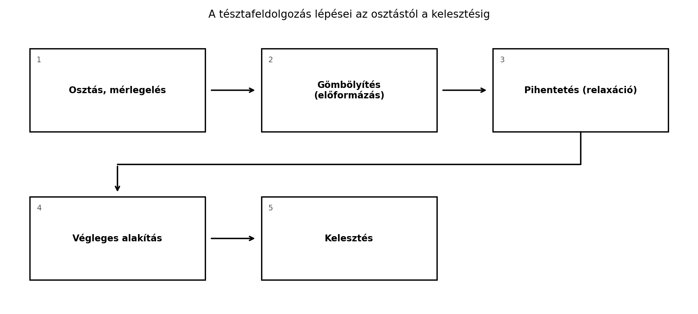

Egy hajnali pékségben a dagasztás jól sikerült: a tészta sima, rugalmas, és a kovász is érett. Az osztás után azonban a tésztadarabok formátlanok, felületük szakadt, belsejük ragadós. Ha a pék így teszi keleszteni, a sütőből lapos, egyenetlen kenyerek és szétnyílt varratú péksütemények kerülnek ki.
Az alakító műveletek nem csupán a termék végső külalakját adják meg. A gömbölyítés, hosszformázás, sodrás, hurkolás, fonás, nyújtás és hajtogatás a sikérháló feszítésével, rendezésével és zárásával olyan szerkezetet épít fel, amely a kelesztés és sütés alatt megtartja a gázt, irányítja a tészta tágulását, és kialakítja a bélzet lyukazatát és a héj repedezettségét. A helytelenül megválasztott pihentetés (relaxáció) pedig éppúgy tönkreteheti ezt a munkát, mint a rossz gépi beállítás.
Továbbvitt eredmény. Az itt tanult alakító műveletek és a pihentetés szabályai közvetlenül a Kézi osztás, gömbölyítés és hosszformázás, a Sodrás, hurkolás, fonás és csavarás, a Gömbölyítő-, hosszformázó gépek és pihentetők, a Süteménytészta-osztók, formázó- és sodrógépek és a Megformázott tészták fagyasztása, csomagolása és tárolása alfejezetekben térnek vissza. A cél az, hogy a tanuló ne csak mozdulatokat másoljon, hanem értse, mit csinál a tésztával.
A tésztafélék gyártásának középső szakaszában az osztott, mérlegelt tésztadarabokból először előformázott (gömbölyített), majd pihentetett, végül végleges formára alakított darabok lesznek. A folyamat figyelmen kívül hagyása gyakran vezet a tészta „összeroppanásához” vagy a termék szétnyílásához.

Az ábra azt mutatja, hogy a pihentetés miért híd az elő- és a végleges alakítás között: a gömbölyítés közben megfeszített sikérszálaknak idő kell ahhoz, hogy ellazuljanak, különben a következő műveletben a tészta szakad, és a darab nem formázható pontosan.
Definíció. Tésztaalakításnak nevezzük azokat a mechanikai műveleteket – gömbölyítés, hosszformázás, sodrás, hurkolás, fonás, nyújtás, hajtogatás –, amelyekkel az osztott, pihentetett tésztadarabnak a kívánt termékre jellemző formát és szerkezetet adjuk, miközben a benne lévő gázokat részben megtartjuk, részben eltávolítjuk, és a sikérhálót rendezett, feszes, zárt felületű rendszerré alakítjuk.
Definíció. Pihentetésnek (relaxációnak) nevezzük az alakító műveletek közé iktatott rövid, fedett, huzatmentes állásidőt, amely alatt a tésztadarabból a mechanikai igénybevétel miatt fellépő belső feszültség kioldódik, a sikérszálak részben elernyednek, és a darab újabb alakításra, illetve sütés előtti kelesztésre alkalmas lesz.
A gyakorlatban a két fogalom szorosan összetartozik: a jól megválasztott pihentetési idő nélkül az alakítási lépések egymást rontják.
Egyszerű műveletek azok, amelyek egyetlen alaktípust hoznak létre:
Összetett műveletek azok, amelyek két vagy több egyszerű műveletből épülnek fel:
Kézi és gépi alakítás. A kis- és nagytömegű kézi feldolgozás a kéz hőjét, nyomását és mozgását használja. A gépi alakítás görgős, szalagos vagy préselő rendszerrel, nagyobb sorozatban dolgozik. A tudás magva ugyanaz: olyan mechanikai igénybevételt adni a tésztának, amely a sikérhálót rendezi, a felületet zárja, de nem szakítja el.
Szabály. Alakítás előtt mindig ellenőrizni kell a tésztaérés állapotát (nyújthatóság, rugalmasság, felületi tapadás) és a darabok hőmérsékletét. Az éretlen, hideg, túl merev vagy túl lágy tészta másképp viselkedik, és az alakítási hiba már a kelesztés előtt eldől. A paramétereket a pékség technológiai lapja, valamint a liszt- és gépvizsgálati tapasztalatok rögzítik (ellenőrizendő: az üzemi technológiai lap).
A dagasztás után a sikérháló erős, de rendezetlen. Az alakítás során a mechanikai erő a tésztát részben gáztalanítja, a tésztaszálakat irányba feszíti, a darabot tömöríti, felületét sima, kevésbé szakadt réteggel zárja. Ettől a kelesztés során a keletkező szén-dioxid nem szökik el, hanem a szerkezetben egyenletes, finom lyukazatot hoz létre.
Összefüggés. A hosszformázás során a tésztadarabot hengerré strukturáljuk. A hengerpalást a sikérszálakat feszesen, hosszirányban rendezi, a darab szélét aláhajtjuk és a varratot lezárjuk. A varrat a kelesztés alatt lefelé vagy a forma aljára kerül, így a sütésben nem nyílik szét, és a termék felszíne rajzolható, vágatható lesz.
Figyelem. A túlzott gépi igénybevétel (pl. hosszú, magas fordulatú formázás) a sikérháló elszakadását és kenhető, ragacsos felületet okoz. A jelenséget gyakran „túlgyúrásnak” nevezik, és a tészta a sütőben nem tudja tartani a gázt.
Célja: a tésztadarab zárt, sima felületű, közel gömb alakú előformája; a sérült szélek eltüntetése; a gáz részleges megtartása.
Kézi fogás. A kinyúló felületű, osztott darabot enyhén lisztezett munkalapra tesszük. A tenyeret a darabra helyezzük, és az ujjpárnákkal a tésztát a felülethez szorítjuk, majd a csuklóval körkörösen görgetjük. A darab végén a felület feszes, a talpa simán zárt. A művelet akkor jó, ha a tészta nem ragad a kézhez, és a felületén nem látszanak szakadt redők.
Az ábra felső sora a mozdulatot négy lépésben mutatja: 1 a tenyér kupolaszerűen a darabon, az ujjpárnák a munkalapon; 2 körkörös görgetés a csuklóból (jobb kéznél az óramutató járásával ellentétesen), a darab alja a laphoz tapad; 3 a felület feszül, a redők a talp felé húzódnak; 4 kész gömb. Az alsó sor a helyes és a két leggyakoribb hibás eredményt veti össze.
A gömböt mindig a talpán is ellenőrizd: a helyes gömb talpa zárt, a redők egy pontba futnak. Ha a felület szakad és a talp nyitott, túl erős volt a nyomás; ha a darab csúszik és nem feszül, túl sok a liszt a munkalapon – ilyenkor a lisztet söpörd le, mert a darabnak a laphoz kell tapadnia. A HTML-kiadásban a lépések és a hibás változatok egyenként léptethetők.
Gépi gömbölyítés. A kúpos vagy spirálos gömbölyítőgép a tésztadarabot csészében vagy vájúban forgatja, így a darab felületét zárt gömbbé alakítja. A gép beállítása a darabtömeghez és a tészta állagához igazodik (ellenőrizendő: a gép gyártói adatlapja). A lisztporozás itt is csak annyi legyen, hogy a tészta ne tapadjon, de a felület ne száradjon ki.
Továbbvitt eredmény. A gömbölyítés gyakorlata a Kézi osztás, gömbölyítés és hosszformázás alfejezetben részletesen, a gépi gyakorlat pedig a Gömbölyítő-, hosszformázó gépek és pihentetők alfejezetben kerül elő.
Célja: a kenyér- vagy kiflitésztából hosszú, hengeres, egyenletes átmérőjű darab kialakítása, amelyből kenyér, bagett, kifli vagy fonat készül.
Kézi fogás. Az előformázott, pihentetett gömböt enyhe lisztfelületen lapos, kissé ovális lappá nyomjuk. A felső harmadot a középvonalig behajtjuk, a tenyerünkkel leragasztjuk; a jobb és bal szélét is enyhén középre hajtjuk; majd a darabot magunktól elfelé hengerítjük, a hüvelykujjal a tészta élét a munkalaphoz szorítva. A végén a hengert előre-hátra görgetjük, amíg egyenletes lesz. A varrat alul marad.
Gépi hosszformázás. A hosszformázó gép előformázott darabokat nyújtószalagra, hengerek közé, majd formázóvájúba vezet, ahol a tésztát feltekerik és hosszra formálják. A beállítások (résméret, vájúerő, sebesség) határozzák meg a tészta nyúlását és zárását (ellenőrizendő: az üzemi gép és a technológiai lap).
Gépbiztonság. A gömbölyítő- és hosszformázógépet csak betanítás után, felügyelettel kezeld. A behúzó hengerek és szalagok közé nyúlni üzem közben tilos (behúzás, zúzódás); a beragadt darabot csak leállított, áramtalanított, újraindítás ellen biztosított gépből, a hengerek megállása után vedd ki. A részletes szabályokat a Gömbölyítő-, hosszformázó gépek és pihentetők alfejezet adja.
Szabály. Hosszformázás után a varrat mindig zárt, a henger felülete feszes, a két vége egyenletesen elvékonyodó vagy tompa – a kívánt terméktől függően. A nyitott varrat a sütésben szétnyíló, lencse alakú terméket ad.
A kézi fogás hat mozdulatát az alábbi felülnézeti képsor mutatja (a pék a kép alsó szélénél áll): 1 ovális lap, 2 a felső harmad behajtva, 3 a szélek befelé, 4 feltekerés a hüvelykujjal, 5 görgetés, 6 kész henger varrattal alul; a 7. és 8. kocka a zárt és a nyitott varrat keresztmetszete.
A 4. lépésnél figyelj arra, hogy a hüvelykujj a tészta élét a munkalaphoz szorítsa: így feszül a felület, és a varrat zárt marad. A gépi hosszformázó (lásd a Gömbölyítő-, hosszformázó gépek és pihentetők alfejezetet) ugyanezt a lap → feltekert henger alakváltozást utánozza.
Célja: az egyenletes tésztahosszból orsó vagy kifli alakú, zárt felületű darab létrehozása.
Gyakorlat. A hengert enyhén lisztezett munkalapra fektetjük. A tenyeret a henger két végére helyezzük, és a két kezet ellentétes irányba, előre-hátra görgetve a tésztát hosszirányban nyújtjuk. A nyújtás és csavarás egyidejű hatása stabil, a sütésben tartó formát ad. A túl vékonyra sodort tészta könnyen elszakad; a hirtelen erős nyújtás pedig a felületet felhasítja.
Kifli kézi feltekerése. A sodrással orsóvá vékonyított darabot (vagy a hosszú háromszögre nyújtott lapot) a széles végétől a keskeny csúcs felé, enyhe nyújtással feltekerjük; a csúcs alul, középen marad, végül a két végét behajlítjuk. A képsor 1–6. kockája ezt a sorrendet követi, a két áthúzott kocka a túl vékonyra sodort, szakadt és a lazán tekert, kinyíló kiflit mutatja.
A kiflisodró gép (lásd a Süteménytészta-osztók, formázó- és sodrógépek alfejezetet) ugyanezt a mozdulatsort utánozza; ha a gépen kinyílik a kifli, ugyanazt az okot keresd, mint kézi sodrásnál (hideg, feszes tészta, laza tekercs).
Hurkolás. A hosszformázott hengert U alakban vagy hurokban összehajtjuk, a szabad végeket a tészta alá, a hurokba tűrjük. A perecforma, a hurkos kalács vagy a koszorúforma is ezen az elven készül. A hurokban a darab felülete legyen feszes, a végek nyomódjanak a tésztához, hogy ne ugorjanak fel kelesztés közben.
Fonás. A fonáshoz 2–5, néha több, egyforma hosszú, pihentetett tésztahengert készítünk. A hengereket felső végüknél összecsípjük, majd meghatározott sorrendben alul–felül keresztezzük, végül az alsó végeket behajtjuk. A fonás szoros, de nem fojtott: a szálak között kicsi, egyenletes rés legyen, hogy a kelesztés alatt a forma egységesen táguljon. A túl feszes fonás a sütésben a díszítő minta megrepedését okozza.
Csavarás. A tésztadarabot vagy két párhuzamos hengert csavarással bordás vagy kötél formára alakítjuk. A csavaráshoz az egyik kezet a darab egyik végére, a másikat a másikra téve ellentétes irányba csavarunk, majd a kész darabot a tepsire emeljük. A csavart tészta a kelesztésben felül feszes, alul tömör maradhat.
A fonási sorrendet úgy írjuk le, hogy a szálakat a helyük szerint számozzuk balról jobbra, és minden lépés után újraszámozzuk. Elterjedt szabályok: háromágú copfnál „1 a 2 fölé, 3 a 2 fölé”, ismételve (a szélső szálak felváltva középre kerülnek); négyágúnál „2 a 3 fölé, 4 a 2 fölé, 1 a 3 fölé”; ötágúnál „2 a 3 fölé, 5 a 2 fölé, 1 a 3 fölé”, mindig ismételve; kétágúnál a két szálat mindig ugyanabba az irányba csavarjuk egymás köré (ellenőrizendő: üzemi/szakmai fonási szabály – több hagyományos változat is helyes). Az ábra a négy sémát eltérő vonalmintájú szálakkal mutatja (felül összecsípve, alul behajtva), alatta a hurkolást, a csavarást és a túl feszes fonás hibáját.
A sémán a mozgó szál mindig a többi fölött halad át (fehér kontúrral rajzolva). Gyakorlásnál először száraz zsinórral vagy rövid tésztahengerekkel próbáld ki a sorrendet; a HTML-kiadásban ágszám szerint választhatsz nézetet, és a lépések gombjai a mozgó szálat emelik ki.
Nyújtás. A tésztadarabot sodrófával vagy kézzel, egyenletes nyomással a kívánt vastagságú lappá alakítjuk. A nyújtás közben a tésztát rendszeresen megemeljük, átforgatjuk, hogy ne ragadjon le, és ne húzódjon vissza. Az erős visszahúzódás a túl rövid pihentetés jele.
Hajtogatás. A nyújtott lapra zsiradékot rétegezünk, majd a lapot szabályos redőkben hajtogatjuk és ismét kinyújtjuk. Ez a szakaszos rétegelés alakítja ki a leveles tészta vajas/zsíros rétegeit. A hajtogatás során a tészta hőmérsékletét alacsonyan kell tartani, a rétegeket nem szabad összenyomni, és a pihentetés hidegben történik (ellenőrizendő: az üzemi technológiai lap).
Higiénia. A kézzel alakított tészta közvetlenül élelmiszerrel érintkezik. A munkához tiszta, száraz, ép bőrű kéz, rövid, lakkozás nélküli köröm, hosszú ujjú munkaruha felhajtva vagy rövid ujjú zubbony, hajháló és a munkaterületre jellemző teljes tisztaság szükséges. A lisztet adagolóedényből, nem a kezünkkel a zsákból szórjuk, hogy a tésztadarab ne szennyeződjön.
Allergén. A lisztes tészta glutént tartalmaz. A búzalisztpor a munkaterületen a gluténmentes termékek keresztszennyeződését okozhatja, ezért a gluténmentes termékeket külön helyiségben vagy időben, külön eszközökkel alakítják, a szellőzést és a porszórást ellenőrizve (ellenőrizendő: a pékség allergénkezelési terve).
A tészta az alakítás során mechanikai feszültséget halmoz fel. A sikérszálak megnyúlnak, a tészta rugalmassága megnő, és a darab azonnal újraformázva visszahúzódik, vagy éppen szakad. Ezért a gömbölyítés után pihentetni kell, mielőtt a végleges formázás elkezdődik.
Céljai:
Helye és feltételei. A pihentetést fedett, huzatmentes helyen végezzük. A tésztadarabokat letakarjuk fóliával, vagy kelesztőszekrényben, illetve gép pihentetővályújában tartjuk, ahol a páratartalom és a hőmérséklet egyenletesebb. A felületi kiszáradás bőrösödést okoz, ami a későbbi formázásnál repedésként mutatkozik. A pihentetési idő terméktől és tésztaállagtól függ, jellemzően 5–20 perc, de hideg tészták hosszabb, lágy tészták rövidebb relaxációt igényelnek. A megadott idő tanulási példa, amit a pékség technológiai lapja és a gyártói adatlap pontosít (ellenőrizendő: az üzemi technológiai lap).
Példa. Egy fehér kenyérnél a gömbölyített darab bőrös felülete azt jelenti, hogy a pihentetés ideje túl hosszú vagy a letakarás nem volt megfelelő. A formázáskor a tészta reped, a kenyeres forma héján repedések jelennek meg.
Szabály. A pihentetés nem helyettesíti a kelesztést. A pihentetés rövid, a kelesztés hosszabb, a darabot a végleges terjedelemre és gáztartalomra hozza. A két folyamat egymásra épül, de célja más.
Egy tanműhelyben két tanuló dolgozik: az egyik 60 darab, egyenként 0,50 kg-os nyers kenyértésztát gömbölyít, a másik az elkészült darabokat hosszformázza. Egy darab gömbölyítése 12 s; a technológiai lap szerint a gömbölyítés és a hosszformázás között legalább 10 perc pihentetés kell. Az első tanuló a gömbölyítést a 0. percben kezdi, és percenként 5 darabot gömbölyít. Hány perc múlva kezdheti a hosszformázást az első gömbölyített darabbal, és mennyi ideig gömbölyít összesen?
Az első darab a 0,20. percben készül el, tehát a hosszformázása a percben kezdhető. A gömbölyítés a 12. percig tart, így az utolsó darab formázása perc után kezdhető.
Egy kalácsfonathoz a tanuló 3 egyforma, henger alakú tésztadarabot készít. A fonat hossza 35 cm legyen. A tészta kelesztés közben hosszirányban mintegy 15%-kal nyúlik, sütés közben további 10%-kal. Milyen hosszúra formázza a tésztahengereket, hogy a kész fonat 35 cm legyen?
A példa tanulási becslés: a valós nyúlás függ a liszt, a tészta állaga, a kelesztés és a sütőtér hőmérsékletétől (ellenőrizendő: üzemi technológiai lap).
A tészta kolloid rendszer, amelyben a sikérháló elasztikus, a keményítő duzzadó, a víz és a gázok a kapillárisokban és zsákokban helyezkednek el. Az alakítás három fő hatást gyakorol a szerkezetre:
Gáztalanítás. A kézi vagy gépi erő a tésztadarabban lévő szén-dioxidot részben kinyomja. Ez nem hiba: a feldolgozás közben a tésztát „újjászervezzük”, és a kelesztés a formázott, zárt szerkezetből újra finom lyukazatot fejleszt.
Feszítés és rendezés. A gömbölyítés körkörös, a hosszformázás hosszanti irányú feszítést ad a sikérhálónak. Ez a rendezett szerkezet a sütésben egyenletesebb héjat és bélzetet ad, és csökkenti a terjedés közbeni egyenetlen repedést.
Zárás. A varratot, a hajtásokat, a fonatvégeket a tésztához dolgozzuk, így a felület összefüggő, a gáz elszökését gátló réteget kap. Ha a zárás nem sikerül, a termék a kelesztésben vagy a sütőben a varratnál felnyílik, és a kívánt forma torzul.
Hiba. A formázás közben a munkalapra túl sok lisztet szórunk. A liszt a felület alá kerülve megakadályozza a tészta záródását, így a varrat és a hajtás szétnyílik. A megoldás: csak annyi lisztet használjunk, hogy a tészta ne tapadjon, és a formázást ne poros, hanem enyhén érdesített felületen végezzük.
Figyelem. A tésztadarabot nem szabad gyűrni, húzni, ütni. A durva mechanikai hatás a sikérhálót maradandóan károsítja, a tészta kenhetővé válik, és a késztermék tömör, lapos lesz.
Reggeli munkában a pék hosszformázott búzakenyeret készít. A gömbölyített darabok félrerakva, letakart fólia alatt pihennek. A felületük kissé megszikkad, de a pék formázáskor azt tapasztalja, hogy a tészta a varratnál nem záródik, és a sütőben a kenyerek oldala felnyílik. A hiba oka: a pihentetés során a fólia nem zárta le a tésztát, a felület bőrösödött, és a varratnál a száraz szélek nem ragadtak össze. A megoldás: a pihentetést zárt dobozban vagy fóliával szorosan letakarva végezni, és a felületet enyhén benedvesíteni, ha már bőrös. A termék oldalán látható nyílás így megelőzhető.
A példa tanulsága: a pihentetés nemcsak idő, hanem feltétel is – hőmérséklet, páratartalom, takarás és a tészta felületének védelme egyszerre.
A formázott és pihentetett tészta minőségi jellemzői:
Az ellenőrzés módja: szemrevételezés, kézzel tapintás, darabtömeg és hosszmérés, valamint a formázás utáni sütési próba (ellenőrizendő: az üzemi minőségi előírás).
1. Rövid pihentetés. A gömbölyítés után rögtön hosszformáznak, a tészta visszahúzódik, a henger rövid és tömör lesz, a varrat pedig nem záródik.
2. Túl hosszú pihentetés. A tészta szétterül, a felület bőrösödik, a darab nehezen formázható.
3. A fonásnál a szálak nincsenek egyenletes hosszúak és feszesek. A kalács kelesztéskor egyik oldalon kidomborodik, a minta félrecsúszik.
4. A leveles tészta hajtogatásakor a vajréteg kifolyik. A tészta ragad, a lap szakad.
1. A gömbölyítés célja a darab zárt, sima felületének kialakítása, a szélek eltüntetése és a gáz részleges megtartása, a sikérháló rendezése.
2. A pihentetés a formázási műveletek közötti rövid, fedett relaxáció, amely a feszültséget oldja, és a tésztát újra formázhatóvá teszi. A kelesztés a végleges formájú tészta hosszabb érése, amelynek során a tészta gázt fejleszt, térfogata nő, szerkezete és íze kialakul.
3. A takarás a felületi kiszáradást (bőrösödést) akadályozza meg. A bőrös felület záródni nem képes, a tészta reped.
4. A pihentetési idő túl rövid, vagy a tészta hőmérséklete alacsony, és a sikér feszültsége nem oldódott; növelni kell a relaxációt, és ellenőrizni a tészta hőmérsékletét.
5. A túl szoros fonás a sütésben a minta szétrepedéséhez és a fonat torzulásához vezet, mert a tészta nem tud egyenletesen tágulni.
1. feladat (A) Sorold fel az egyszerű és az összetett alakító műveleteket, és adj mindegyikre egy-egy termékpéldát!
2. feladat (A) Mi a pihentetés három legfontosabb feltétele?
3. feladat (B) Két tanuló dolgozik: az egyik 80 db kiflit gömbölyít, a másik formáz. Egy darab gömbölyítése 15 másodperc, a pihentetési idő 10 perc. A formázás 1 darabnál 20 másodperc. Hány percig tart a hosszformázás, és hányadik percben fejeződik be, ha a formázó a pihentetési idő leteltével folyamatosan, megszakítás nélkül dolgozik? (Feltételezzük, hogy az első gömbölyített darabnál a formázás kezdete éppen a 10. perc.)
4. feladat (B) Egy kalácskészítés során 4 szálat fonunk. A szálak nyers hossza 30 cm, a kelesztési hossznövekedés 12%, a sütési hossznövekedés 5% a kelesztett hosszra vetítve. Mekkora a kész fonat hossza?
5. feladat (C) Hosszformázáskor a varrat nyitott marad, a kenyér oldala a sütésben felnyílik. Milyen lépéseket javítanál a gömbölyítés, a pihentetés és a hosszformázás során?
6. feladat (D) Kézi gömbölyítéskor a tészta a kézhez ragad. A tanuló lisztet szór a tésztadarabra, de a gömbölyítés során a felület tovább szakadozik. Mi a helyes beavatkozás, és mi a hiba oka?
1. feladat (A)
Egyszerű: gömbölyítés (zsemle), hosszformázás (kenyér), sodrás
(baguette), nyújtás (lepény). Összetett: hurkolás (perec), fonás
(kalács), hajtogatás (leveles tészta), csavarás (csavart kifli).
2. feladat (A)
A pihentetés feltételei: fedett, huzatmentes hely; megfelelő hőmérséklet
(a tészta típusához igazított); a felület védelme a kiszáradástól
(fólia, fiók, kelesztőszekrény).
3. feladat (B)
Gömbölyítési idő:
.
A formázási idő:
.
A hosszformázás tehát kb. 27 percig tart. A formázó a 10. perctől
folyamatosan dolgozik (a gömbölyítő 15 s/db tempója gyorsabb, mint a
formázó 20 s/db-é, ezért nem kell darabra várnia), így a formázás a
percben fejeződik be. Egy emberrel a formázás a gömbölyítés végén, a 20.
percben kezdődhetne, és a 46,7. percben fejeződne be.
4. feladat (B)
Kelesztett hossz:
;
kész fonat hossza:
(tanulási példa: a sütés eleji kemencerugás miatt a méret nő; az érték
termékfüggő, ellenőrizendő).
5. feladat (C)
Ellenőriznünk kell a gömbölyítés zárását, a tészta felületi állapotát, a
pihentetés takarását és idejét, valamint a hosszformázás varratának
aláhajtását. Ha a felület bőrös, a varratot benedvesítéssel vagy a darab
belső, kevésbé száraz felületének használatával zárjuk. A hosszformázás
végén a varratot a tészta alá, majd a formába helyezve lefelé kell
tenni.
6. feladat (D)
A ragadás oka gyakran a túlzott gáztalanítás vagy a hosszú, meleg
feldolgozás után fellépő túlzott nedvesség, nem pedig a liszt hiánya. A
helyes beavatkozás: a tésztát rövidebb, hűvösebb pihentetésre tenni, a
munkafelületet és a kezet enyhén, egyenletesen lisztezni, de a tésztára
ne szórjunk durva, vastag lisztet, mert a felület nem zár. A szakadozás
oka a túl hosszú vagy túl meleg feldolgozás, illetve a túlzott erő.
A tésztafeldolgozás alakító műveletei a sikérhálót rendezik, a felületet zárják, és a termék végső formáját adják. A gömbölyítés előformázás, a hosszformázás hengerré alakít, a sodrás hosszirányban nyújt, a hurkolás, fonás és csavarás összetett formát hoz létre, a nyújtás és hajtogatás lepényt, illetve réteges szerkezetet ad. Minden alakítás után vagy előtt a pihentetés (relaxáció) a belső feszültséget oldja, és lehetővé teszi a további formázást. A pihentetés fedett, huzatmentes, megfelelő hőmérsékletű helyen történik, jellemzően 5–20 percig, a tészta típusától függően. A tészta túl rövid pihentetésnél visszahúzódik, túl hosszúnál bőrösödik, szétterül. Az alakítás és pihentetés során a higiénia, a munkafelület lisztezése és a gépbiztonság kiemelt jelentőségű. A továbbvitt eredmény: a műveletek és a pihentetés gyakorlata a kézi és gépi feldolgozás, a késleltetett kelesztés és a termékfejezetek alapjául szolgál.